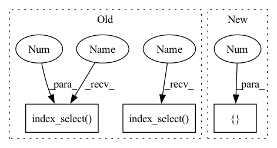

Pattern ID :29101

Before Change
feat_size = self.feat_size[level]
indices = self._get_indices(cls_targets.device, level)
cls_targets_out[level_index].append(
torch.index_select(cls_targets, 0, indices).view([feat_size, feat_size, -1]))
box_targets_out[level_index].append(
torch.index_select(box_targets, 0, indices).view([feat_size, feat_size, -1]))
if last_sample:
cls_targets_out[level_index] = torch.stack(cls_targets_out[level_index])
box_targets_out[level_index] = torch.stack(box_targets_out[level_index])
After Change
feat_size = self.anchors.feat_sizes[level]
steps = feat_size[0] * feat_size[1] * self.anchors.get_anchors_per_location()
cls_targets_out[level_index].append(
cls_targets[count:count + steps].view([feat_size[0], feat_size[1], -1]))
box_targets_out[level_index].append(
box_targets[count:count + steps].view([feat_size[0], feat_size[1], -1]))
count += steps
In pattern: SUPERPATTERN
Frequency: 3
Non-data size: 3
Instances
Fragment ID: 85787055
Project Name: rwightman/efficientdet-pytorch
Commit Name: 8244f8a93bbe8ebb5e977547b4ad7a9416ec068a
Time: 2020-10-06
Author: rwightman@gmail.com
File Name: effdet/anchors.py
M Class Name: AnchorLabeler
N Class Name: AnchorLabeler
M Method Name: batch_label_anchors(3)
N Method Name: batch_label_anchors(4)
M Parent Class: object
N Parent Class: object
M File Name: effdet/anchors.py
N File Name: effdet/anchors.py
M Start Line: 400
M End Line: 426
N Start Line: 367
N End Line: 396
'>
Before Change
feat_size = self.feat_size[level]
indices = self._get_indices(cls_targets.device, level)
cls_targets_out[level_index].append(
torch.index_select(cls_targets, 0, indices).view([feat_size, feat_size, -1]))
box_targets_out[level_index].append(
torch.index_select(box_targets, 0, indices).view([feat_size, feat_size, -1]))
if last_sample:
cls_targets_out[level_index] = torch.stack(cls_targets_out[level_index])
box_targets_out[level_index] = torch.stack(box_targets_out[level_index])
After Change
feat_size = self.anchors.feat_sizes[level]
steps = feat_size[0] * feat_size[1] * self.anchors.get_anchors_per_location()
cls_targets_out[level_index].append(
cls_targets[count:count + steps].view([feat_size[0], feat_size[1], -1]))
box_targets_out[level_index].append(
box_targets[count:count + steps].view([feat_size[0], feat_size[1], -1]))
count += steps
'>
Fragment ID: 85787054
Project Name: rwightman/efficientdet-pytorch
Commit Name: 8244f8a93bbe8ebb5e977547b4ad7a9416ec068a
Time: 2020-10-06
Author: rwightman@gmail.com
File Name: effdet/anchors.py
M Class Name: AnchorLabeler
N Class Name: AnchorLabeler
M Method Name: batch_label_anchors(3)
N Method Name: batch_label_anchors(4)
M Parent Class: object
N Parent Class: object
M File Name: effdet/anchors.py
N File Name: effdet/anchors.py
M Start Line: 400
M End Line: 426
N Start Line: 367
N End Line: 396
'>
Before Change
indices = torch.arange(count, count + steps, device=cls_targets.device)
count += steps
cls_targets_out.append(
torch.index_select(cls_targets, 0, indices).view([feat_size, feat_size, -1]))
box_targets_out.append(
torch.index_select(box_targets, 0, indices).view([feat_size, feat_size, -1]))
num_positives = (matches.match_results != -1).float().sum()
After Change
feat_size = self.anchors.feat_sizes[level]
steps = feat_size[0] * feat_size[1] * self.anchors.get_anchors_per_location()
cls_targets_out.append(cls_targets[count:count + steps].view([feat_size[0], feat_size[1], -1]))
box_targets_out.append(box_targets[count:count + steps].view([feat_size[0], feat_size[1], -1]))
count += steps
num_positives = (matches.match_results != -1).float().sum()
'>
Fragment ID: 85787065
Project Name: rwightman/efficientdet-pytorch
Commit Name: 8244f8a93bbe8ebb5e977547b4ad7a9416ec068a
Time: 2020-10-06
Author: rwightman@gmail.com
File Name: effdet/anchors.py
M Class Name: AnchorLabeler
N Class Name: AnchorLabeler
M Method Name: label_anchors(3)
N Method Name: label_anchors(3)
M Parent Class: object
N Parent Class: object
M File Name: effdet/anchors.py
N File Name: effdet/anchors.py
M Start Line: 363
M End Line: 377
N Start Line: 350
N End Line: 360
'>
Before Change
model_type = graph.model_type
if model_type == "cloth_model" or model_type == "deform_model":
relative_target_feature = (torch.index_select(input=target_feature, dim=0, index=senders) -
torch.index_select(input=target_feature, dim=0, index=receivers))
relative_mesh_pos = (torch.index_select(mesh_pos, 0, senders) -
torch.index_select(mesh_pos, 0, receivers))
edge_features = torch.cat((
relative_target_feature,
After Change
selected_nodes = torch.randperm(n=target_feature.shape[0])[0:self._ripple_generation_number]
if self._ripple_generation == "distance_density":
selected_nodes = find_influential_nodes.find_influential_nodes(target_feature, self._radius, self._topk)
reverse_selected_nodes = torch.flip(selected_nodes, [-1])
edges = torch.cat((torch.combinations(selected_nodes, with_replacement=True), torch.combinations(reverse_selected_nodes, with_replacement=True)), dim=0)
senders, receivers = torch.unbind(edges, dim=-1)
'>
Fragment ID: 85787057
Project Name: wwmark/meshgraphnets
Commit Name: eed20dd8a346a7fc237279d136f08b426d5d27d4
Time: 2022-02-11
Author: ruoheng.ma@gmail.com
File Name: ripple_machine.py
M Class Name: RippleMachine
N Class Name: RippleMachine
M Method Name: add_meta_edges(4)
N Method Name: add_meta_edges(5)
M Parent Class:
N Parent Class:
M File Name: ripple_machine.py
N File Name: ripple_machine.py
M Start Line: 310
M End Line: 344
N Start Line: 282
N End Line: 311